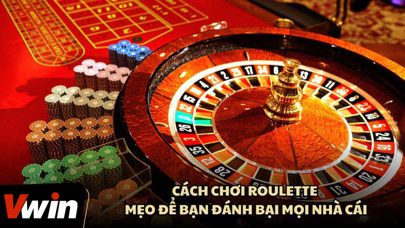
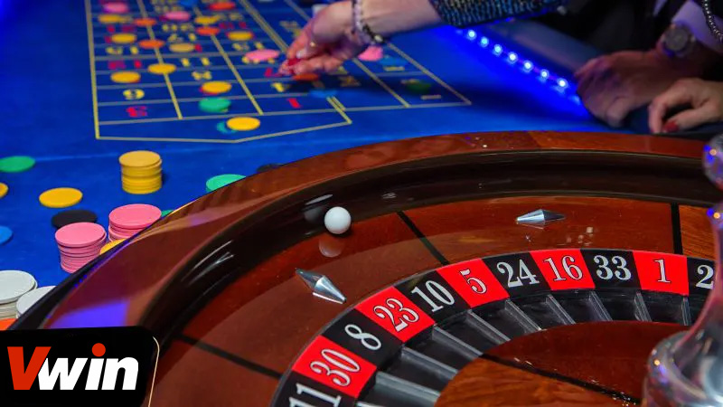
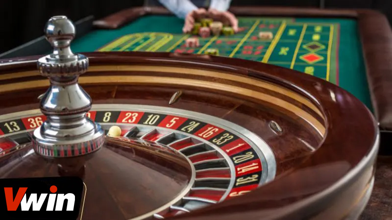

.png)
ĐÃ ĐĂNG TRÊN THÁNG BA 2, 2024 BỞI Vwin
Roulette đã trở thành một trò chơi phổ biến trong cộng đồng người chơi casino trực tuyến, nổi tiếng với tỷ lệ thắng cực kỳ hấp dẫn, thu hút một lượng lớn người tham gia. Sức hút của trò chơi này không chỉ dừng lại ở đó; nó còn đem lại cho người chơi cơ hội giành được những giải thưởng giá trị. Tuy nhiên, chiến thắng trong Roulette không hề đơn giản như nhiều người vẫn tưởng. Vì vậy, những người chơi muốn nâng cao cơ hội thành công không nên bỏ qua các cách chơi roulette hiệu quả được chúng tôi chia sẻ dưới đây.
Roulette, với nguồn gốc từ tiếng Pháp nghĩa là “bánh xe nhỏ”, là một trò chơi may rủi ra đời vào đầu thế kỷ 17 ở châu Âu và đã trải qua nhiều biến đổi trước khi trở nên phổ biến tại Pháp và Hoa Kỳ vào cuối thế kỷ 19. Trong chiến tranh Thế giới thứ hai, trò chơi này nhận được sự quan tâm đặc biệt từ phía binh sĩ, từ đó lan rộng và trở nên thịnh hành.
Ở Việt Nam, trò chơi này thường được biết đến với cái tên bàn cò quay Roulette, là một trong những trò chơi đặt cược được yêu thích nhất tại các sòng bạc và casino trực tuyến. Bất kỳ ai khi bước vào một sòng bạc cũng không khó để nhận ra bàn Roulette bởi số lượng người chơi tụ tập đông đảo. Trải nghiệm chơi Roulette mang lại cảm giác tương tự như xem chương trình “Chiếc nón kỳ diệu”, một chương trình truyền hình nổi tiếng tại Việt Nam, nơi người chơi dự đoán và hy vọng may mắn sẽ mỉm cười với mình qua từng vòng quay.
Tổng quan về tựa game Roulette
Trước khi tiếp cận các cách chơi roulette hiệu quả, việc hiểu rõ về luật chơi của trò này là điều cơ bản và quan trọng. Luật chơi Roulette khá đơn giản và dễ hiểu. Trong trò chơi, nhà cái sẽ quay hồ lỳ, hay còn gọi là bánh xe Roulette, theo một hướng, và sau đó ném một quả bóng nhỏ theo hướng ngược lại vào rãnh mép ngoài của bánh xe đang quay.
Quả bóng sẽ tiếp tục quay trên bánh xe và cuối cùng sẽ mất đà và dừng lại tại một trong 37 ô số (đối với bánh xe Roulette châu Âu) hoặc 38 ô số (đối với bánh xe Roulette châu Mỹ) trên bàn Roulette. Mỗi ô số này được đánh dấu từ 0 đến 36, và trong trường hợp Roulette châu Mỹ, có thêm một ô số 00.
Thời gian cho mỗi vòng quay của Roulette thường kéo dài từ khoảng 30 giây đến 1 phút, tùy thuộc vào cách vận hành của từng sòng bạc. Mục tiêu của người chơi là dự đoán chính xác vị trí mà quả bóng sẽ dừng lại, và đặt cược của mình vào số hoặc nhóm số tương ứng trên bàn Roulette trước khi quả bóng được ném.
Hiểu rõ về luật chơi cung cấp cho người chơi nền tảng vững chắc để phát triển các chiến lược chơi và tối ưu hóa cơ hội chiến thắng của mình trong trò chơi Roulette.
Trước khi tiếp cận các chiến lược chơi Roulette hiệu quả, việc nắm vững luật chơi là bước đầu tiên và quan trọng nhất. Trong Roulette, quy trình diễn ra khá đơn giản: Nhà cái sẽ quay hồ lỳ (bánh xe roulette) theo một hướng và phóng quả bóng theo hướng ngược lại dọc theo rãnh mép ngoài của bánh xe. Quả bóng sau đó sẽ giảm tốc và cuối cùng dừng lại ở một trong 37 ô được đánh số trên bàn quay, mỗi vòng quay kéo dài từ 30 giây đến 1 phút.
Khi đã hiểu rõ luật chơi, người chơi có thể bắt đầu đặt cược. Có khá nhiều sự lựa chọn đặt cược khác nhau, bao gồm:
Sau khi nhà cái thực hiện quay, kết quả sẽ được công bố, ví dụ:
Để tham gia chơi Roulette tại nhà cái, việc đầu tiên bạn cần là tạo một tài khoản tại nhà cái uy tín và nạp tiền vào tài khoản đó. Bạn sẽ cần chuyển tiền từ tài khoản ngân hàng của mình vào tài khoản casino để bắt đầu cá cược trên sòng Roulette. Đây là bước chuẩn bị quan trọng giúp bạn sẵn sàng tham gia vào thế giới Roulette hấp dẫn và có cơ hội giành chiến thắng.
Luật chơi roulette hiệu quả dành cho tân cược thủ
Trong thế giới Roulette, việc áp dụng các thủ thuật và chiến lược là không thể thiếu để tối ưu hóa cơ hội chiến thắng của bạn. Những phương pháp này có thể dựa trên kinh nghiệm cá nhân, phân tích xu hướng từ chuỗi kết quả trước đó, hoặc thậm chí là sử dụng các công thức toán học và nguyên lý khoa học. Dưới đây là một số cách chơi và quản lý vốn bạn nên xem xét:
Một trong những cách chơi roulette phổ biến được nhiều người chơi áp dụng là cách đánh gấp thếp. Đây là phương pháp mà người chơi sẽ nhân đôi số tiền cược sau mỗi lần thua, tiếp tục làm như vậy cho đến khi giành được chiến thắng. Phương pháp này giúp người chơi có cơ hội thu hồi vốn và thậm chí là kiếm được lợi nhuận nếu may mắn mỉm cười.
Tuy nhiên, để áp dụng chiến lược này một cách hiệu quả, bạn cần có một nguồn vốn lớn và sẵn sàng cho rủi ro tiềm ẩn, bởi vì nếu gặp một chuỗi thua liên tiếp, số tiền cần đặt cược sẽ tăng lên nhanh chóng và có thể vượt quá giới hạn tài chính của bạn.
Cách chơi roulette mà bạn mô tả dựa trên việc điều chỉnh số tiền cược theo một chuỗi số cụ thể, tăng cược khi thua và giảm cược khi thắng, là một phương pháp được nhiều người chơi sử dụng nhằm quản lý ngân sách và tối ưu hóa cơ hội chiến thắng.
Phương pháp này yêu cầu người chơi bắt đầu với một số tiền cược nhất định, ví dụ 100.000 VNĐ. Nếu thua, số tiền cược sẽ được tăng lên dựa trên chuỗi số đã định (1, 2, 3, 5, 8, 13, 21, 34), tức là nhân đôi số tiền cược cho lần cược tiếp theo. Ngược lại, khi thắng, người chơi sẽ giảm số tiền cược xuống theo cùng một chuỗi số, cụ thể là giảm xuống hai bước trong chuỗi.
Một biến thể khác của chiến lược này là chuỗi đặt cược 1-3-2-6. Trong phương pháp này, người chơi sẽ nhận tiền đặt cược theo chuỗi 1:3:2:6 sau mỗi lần thua. Ví dụ, bắt đầu với cược 100.000 VNĐ, sau đó nếu thua tiếp tục với 300.000 VNĐ, và tiếp theo là 200.000 VNĐ nếu thua lại, và cuối cùng là 600.000 VNĐ. Mục tiêu của chuỗi này là tận dụng một chuỗi thắng liên tiếp để tối đa hóa lợi nhuận.
Lưu Ý: Cả hai chiến lược này đều đòi hỏi sự quản lý ngân sách cẩn thận và kỷ luật từ phía người chơi. Bạn cần phải có một số vốn lớn để có thể duy trì chiến lược qua nhiều vòng cược và cũng cần sẵn sàng chấp nhận rủi ro vì không có chiến lược nào đảm bảo chiến thắng 100%.
Chiến thuật này có phong cách chơi tương tự với chiến lược cược gấp thếp nhưng là tiến 1/10 lùi 1/10. Nghĩa là nếu anh em thua sẽ nâng mức đặt cược lên 1/10 còn thắng thì anh em cắt giảm tiền cược xuống 1/10. Cách này giảm thiểu khả năng rủi ro của anh em hơn so với chơi gấp đôi, số vốn cũng ít hơn. Đây cũng là một trong các kỹ thuật cao trong cách chơi roulette hiệu quả nên bạn cũng nên cân nhắc.
Chiến thuật hiệu quả để áp dụng cách chơi roulette
Để thành công trong trò chơi Roulette tại sảnh Casino Vwin, không chỉ dựa vào chiến thuật đặt cược mà còn cần nắm vững những bí quyết từ những người chơi chuyên nghiệp. Dưới đây là một số bí quyết giúp bạn chơi Roulette một cách hiệu quả hơn:
Dù bạn là một người chơi roulette lão luyện hay mới chỉ bắt đầu làm quen với trò chơi này, việc hiểu biết và không coi nhẹ các phiên bản Roulette khác nhau là rất quan trọng. Hiện nay, hai phiên bản phổ biến nhất là Roulette Hoa Kỳ và Roulette Châu Âu, mỗi phiên bản đều mang những đặc điểm riêng biệt và cung cấp lợi thế cũng như thách thức khác nhau cho người chơi.
Roulette Hoa Kỳ nổi tiếng với sự xuất hiện của cả số 0 và 00 trên bánh xe, điều này tạo nên tỷ lệ lợi nhuận cao hơn cho nhà cái. Ngược lại, Roulette Châu Âu chỉ có một ô số 0, giúp giảm bớt lợi thế của nhà cái và tăng cơ hội cho người chơi. Do đó, nếu có cơ hội, bạn nên ưu tiên chơi phiên bản Châu Âu để tối ưu hóa cơ hội chiến thắng của mình.
Dù bạn có kinh nghiệm dày dặn hay mới chỉ bắt đầu khám phá thế giới Roulette, việc hiểu rõ về các phiên bản khác nhau của trò chơi này là vô cùng quan trọng. Hiện nay, phiên bản Roulette Hoa Kỳ và Roulette Châu Âu là hai biến thể phổ biến nhất, mỗi loại mang đến những quy tắc và lợi thế nhà cái khác nhau. Điều này ảnh hưởng trực tiếp đến chiến lược và cách chơi của bạn. Tìm hiểu kỹ lưỡng và lựa chọn phiên bản phù hợp với phong cách chơi của mình có thể tối ưu hóa cơ hội chiến thắng.
Quản lý tài chính một cách hiệu quả là yếu tố quyết định đến thành công trong Roulette, cũng như trong mọi trò chơi cá cược khác. Việc quản lý nguồn vốn một cách cẩn trọng không chỉ giúp bạn tránh khỏi việc tiêu hết tiền một cách nhanh chóng mà còn cho phép bạn duy trì được lối chơi ổn định và lâu dài. Đặt ra một kế hoạch vốn cụ thể, biết khi nào nên dừng lại, và phân chia ngân sách sao cho hợp lý sẽ giúp bạn tận hưởng trò chơi mà không phải lo lắng về tình hình tài chính của mình.
Mặc dù việc đặt cược vào một số đơn lẻ có thể mang lại tỷ lệ thắng cược hấp dẫn là 1 ăn 35, nhưng người chơi cần nhớ rằng khả năng để chiến thắng trong những cược này thực sự rất thấp. Do đó, một chiến lược thông minh hơn là phân tán cược của bạn trên nhiều lựa chọn cửa cược khác nhau để tăng cơ hội chiến thắng.
Nhiều người chơi dày dặn kinh nghiệm cũng thường khuyên rằng bạn nên tránh đặt cược vào các con số đặc biệt như 0 hoặc 00, vì chúng thường không nằm trong những lựa chọn thắng cược phổ thông và có thể làm tăng lợi thế của nhà cái. Bằng cách chơi cược nhiều cửa và tránh xa những cửa cược có tỷ lệ thắng thấp, bạn sẽ duy trì được nguồn vốn lâu dài hơn và có nhiều cơ hội hơn để rời khỏi bàn chơi với số tiền thưởng.
Trong khi nhiều người mới chơi có thể coi Roulette là một trò chơi hoàn toàn dựa trên may rủi, thực tế cho thấy kết quả của trò chơi này có thể bị ảnh hưởng bởi nhiều yếu tố khác nhau. Việc chú ý và ghi nhớ kết quả của các vòng quay trước có thể giúp người chơi phát triển nhận thức về xu hướng và mẫu số xuất hiện, từ đó dễ dàng đưa ra những dự đoán tỷ số tiếp theo một cách có cơ sở hơn.
Tuy nhiên, cần nhớ rằng mỗi vòng quay của bánh xe Roulette là độc lập và kết quả của vòng quay này không ảnh hưởng trực tiếp đến kết quả của vòng quay tiếp theo. Do đó, việc sử dụng các kết quả quá khứ để dự đoán tương lai nên được xem xét cẩn thận và không nên quá phụ thuộc vào nó như một chiến lược không thể thay đổi. Việc áp dụng các phương pháp phân tích và quản lý vốn một cách hợp lý sẽ là chìa khóa để tối ưu hóa trải nghiệm chơi Roulette của bạn.
Dù cách chơi roulette có vẻ đơn giản, việc đặt chip không đúng cách theo quy định có thể khiến người chơi mất cơ hội chiến thắng. Để tránh tình trạng này, người chơi cần tuân thủ chính xác các quy tắc đặt cược của trò chơi, bao gồm cả cách và vị trí đặt chip trên bàn cược. Điều này đòi hỏi sự chú ý và hiểu biết về bảng cược cũng như các loại cược khác nhau mà Roulette cung cấp.
Bên cạnh việc tuân thủ quy tắc, quản lý thời gian chơi cũng là yếu tố quan trọng giúp người chơi duy trì được tinh thần tốt nhất và tránh mệt mỏi. Việc phân chia thời gian chơi một cách hợp lý, đặc biệt là trong các phiên chơi dài, giúp duy trì sự minh mẫn và quyết định chính xác, từ đó tối ưu hóa cơ hội chiến thắng. Người chơi nên thiết lập giới hạn thời gian chơi và tuân thủ nó, cũng như đảm bảo rằng họ có đủ thời gian nghỉ ngơi và phục hồi giữa các phiên chơi để tránh mệt mỏi và giữ cho tinh thần luôn trong trạng thái tốt nhất.
Mẹo lưu ý về cách chơi roulette hiệu quả đối với cược thủc
Tổng hợp trên đây là những bí quyết và cách chơi roulette hiệu quả mà chúng tôi muốn chia sẻ cùng các bạn. Hy vọng rằng, thông qua những chia sẻ này, các bạn sẽ rút ra được những bài học quý giá và áp dụng thành công vào các ván Roulette của mình, từ đó giành được những chiến thắng đáng giá. Nhớ rằng, sự kiên nhẫn, quản lý tài chính khéo léo, cùng với việc lựa chọn nhà cái uy tín, sẽ là những yếu tố quan trọng giúp bạn tận hưởng những khoảnh khắc thú vị và có cơ hội làm giàu. Chúc các bạn may mắn và thành công!
Vwin được công nhận là nhà cái cá cược hợp pháp - an toàn. Vwin còn có trụ sở chính và cá cược trực tiếp tại Phú Quốc.